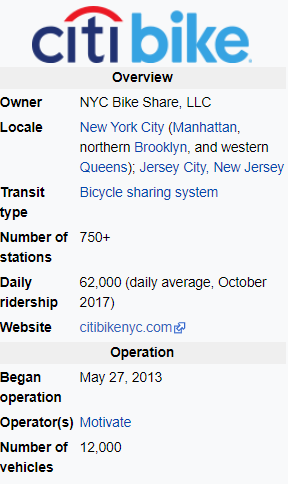
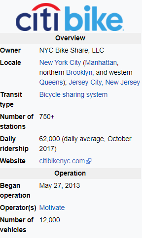
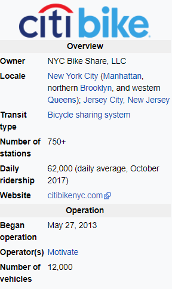

Citi Bike extended it's service by adding 50 stations and 500 bikes in Jersey City, New Jersey. CitiBike officially opened in May 2013 with 332 stations and 6,000 bikes. Annual expansions have brought the totals to 706 stations and 12,000 bikes as of October 2017, making the service the largest bike sharing program in the United States. Further expansions for Citi Bike are planned to extend its service area across Manhattan, Brooklyn, and Queens, and increase the number of bikes to 40,000. As of July 2017, there are 130,000 annual subscribers. Citi Bike riders took an average of 38,491 rides per day in 2016, and the system reached a total of 50 million rides in October 2017. Citi Bike recorded 70,286 trips on July 26, 2017, which it called “the highest single-day ridership of any [bike share] system in the Western world outside of Paris.” The majority of Citi Bike riders were male as of 2015, with women making a quarter of the trips and a third of membership.
The Citi Bike Annual Membership is currently $169 per year and riders can take as many rides as they want, for a max time of 45 minutes. The first 45 minutes of each ride on a classic Citi Bike are included in the annual membership price. If you keep a bike out for longer than 45 minutes at a time, regardless of the type, it's an extra $2.50 per additional 15 minutes.It is safe to assume that no one would be willing to rent a bike for more than 2 hours, if they did, it would cost them an additional $20 assuming that they are annual subscribers.
Most of the trips taken by Citi Bike riders in Jersey City are to the PATH train stations, which connects commuters to Midtown and Lower Manhattan in roughly 20 minutes. The most popular citibike routes turned out to be Central Park loops, Hudson river greenway, East river greenway, Brooklyn Bridge Park, Prospect Park Loop, Brooklyn Waterfront Greenway, Jersey City Waterfront, Governors Island, Start High, End Low: From the High Line to the Lower East Side and A Three-Borough Tour - High Line to the Lower East Side of Manhattan,

The following top top stations in Jersey City account for 45% of all market share:

For the month of July, 2019, most Citi Bike riders were male (60%), with an average age of 34. According to Zillow, the median home value in Downtown Jersey City is $762,200 and the median rent is $2,650. The median household income is $100,336 a year. In comparison, the median home value in New York is $671,400. New York home values have gone up 0.1% over the past year and Zillow predicts they will fall -1.0% within the next year. The median list price per square foot in New York is $668, which is higher than the New York-Newark-Jersey City Metro average of $280. The median price of homes currently listed in New York is $775,000. The median rent price in New York is $2,900, which is lower than the New York-Newark-Jersey City Metro median of $3,000.

Considering the price tag of housing and the high median household income, we propose Citi Bike to expand it's offerings just like CapitalOne. That is, Citi could potentially offer food and beverages at high volume stations. Overall, the top 10 stations account for 46% of all usage.